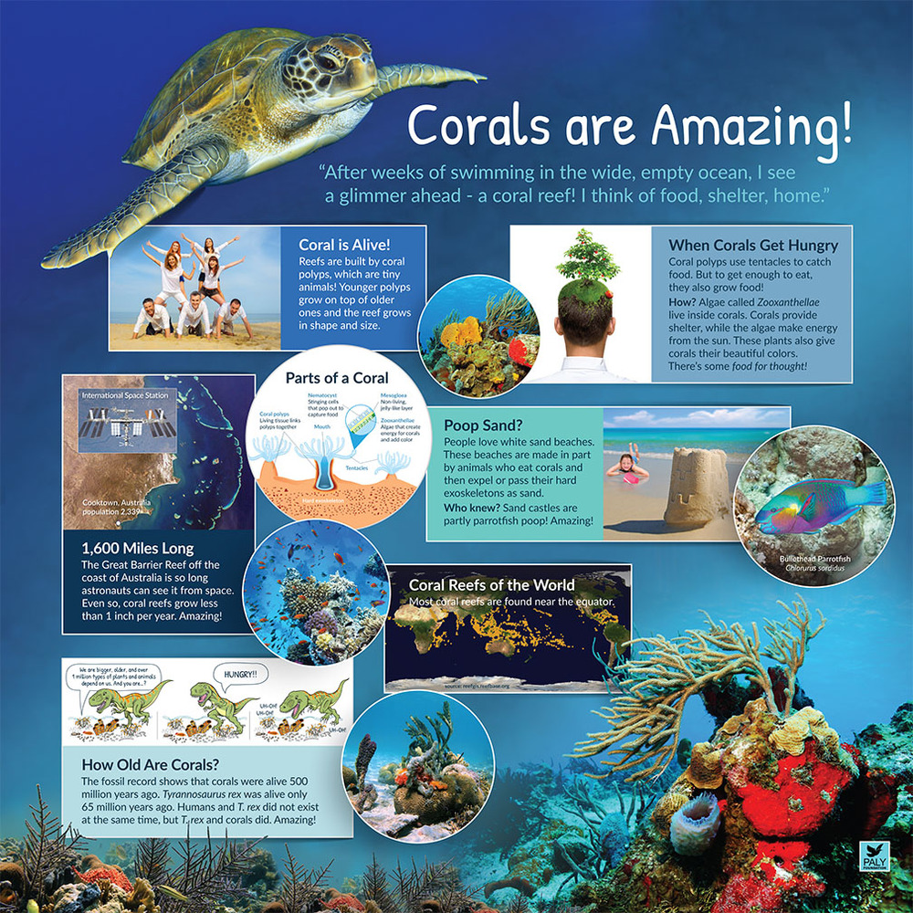

Insights and Call to Action

Credit: The winning design in the competition to design a poster for NatureExhibits c/o The Paly Foundation, Arizona, USA. Graphic design: Martina Lipovac; software: Adobe Illustrator, Adobe Photoshop; photos and graphics: Marine Photobank, Dollar Photo Club; year of project: 2015.
The rapid degradation of coral reefs is one of the most pressing environmental challenges of our time. These ecosystems are vital, not just for their unparalleled biodiversity, but also for the livelihoods, coastal protection, and food security they provide to millions of people. Coral reefs act as natural barriers, shielding coastlines from storms and erosion, and serve as critical habitats for countless marine species. The loss of coral reefs would have a devastating ripple effect, impacting marine life, economies, and coastal communities globally.
However, the root causes of coral reef degradation are vast and interconnected, including climate change, overfishing, pollution, and unsustainable tourism practices. Rising sea temperatures caused by global warming lead to coral bleaching, a phenomenon where corals lose their color and vital symbiotic algae, often resulting in coral death. Meanwhile, pollutants such as plastic waste, agricultural runoff, and industrial discharge further weaken coral health, compounding the problem.
Immediate and decisive action is required at every level—local, national, and global. Governments must enact stricter environmental regulations, implement marine protected areas, and invest in large-scale restoration projects. International agreements, such as the Paris Agreement, are crucial in addressing climate change and reducing carbon emissions that contribute to coral bleaching. Organizations must work to support these initiatives while fostering sustainable development that aligns economic growth with environmental protection.
Individuals also play an essential role in coral reef conservation. By making informed and conscious choices, such as supporting sustainable seafood practices, reducing plastic waste, and participating in reef-friendly tourism, we can lessen our environmental impact. Moreover, engaging in local clean-up efforts, advocating for climate action, and raising awareness about coral reef conservation will help create a collective movement toward preserving these ecosystems.
Coral reefs may seem distant to many, but their survival is intrinsically linked to the health of the planet. By taking action now, we can protect these underwater treasures for future generations, ensuring that they continue to thrive and support life in our oceans. The time to act is now—through shared responsibility, innovation, and a commitment to sustainability, we can pave the way toward a future where coral reefs not only survive but flourish once again.